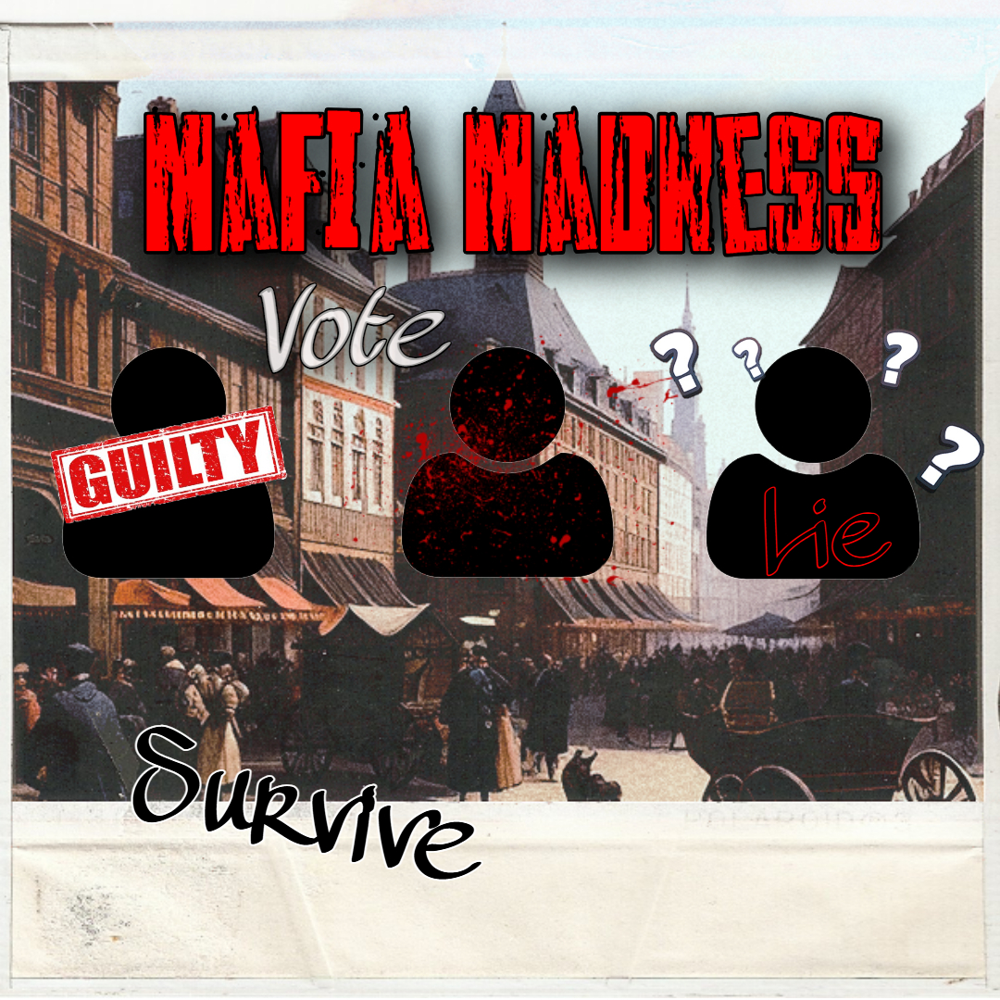
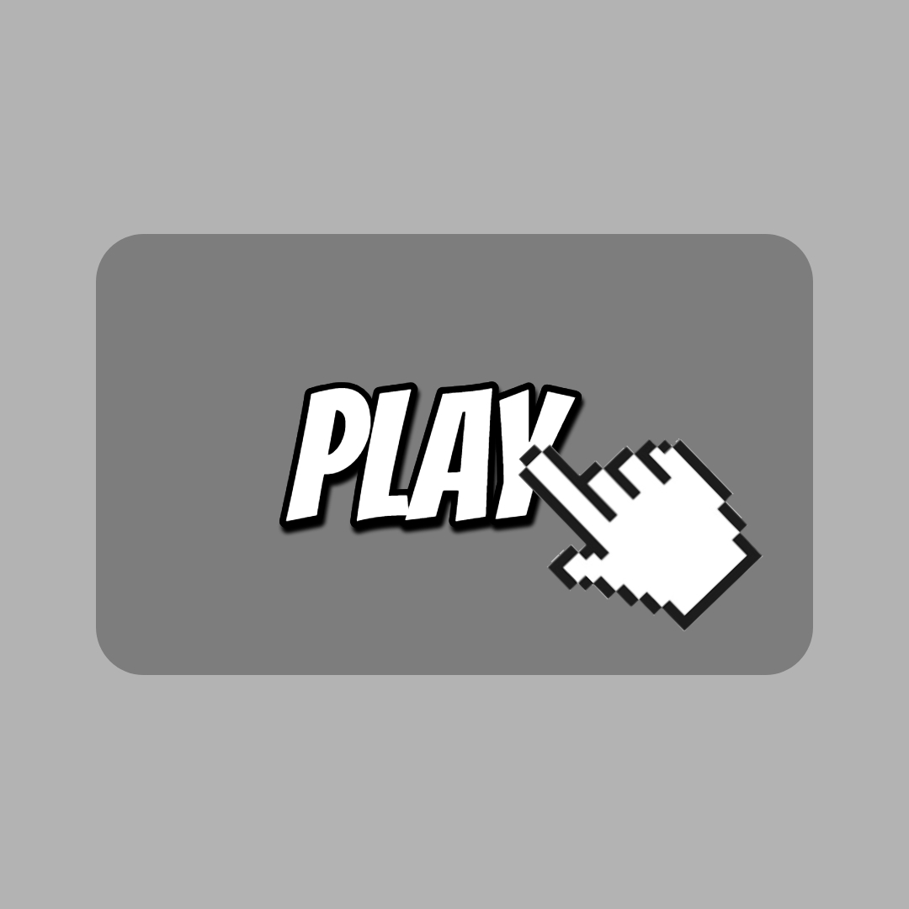

Uncover the Truth
Step into the shadowy world of deception, strategy, and high-stakes bluffing with Mafia Madness, the ultimate online version of the classic party game, Mafia! Whether you’re a cunning conspirator, a sharp-eyed detective, or just love the thrill of outsmarting your friends, our game is designed to keep you on the edge of your seat!
How to Play?
- Step #1 Click Play 
- Click the play button in the navigation bar. Once you have loaded onto the game page continue to Step #2
- Step #2 Start
- Create a game by clicking the Create Game Button or if you are joining a game click the join game button and ensure you enter all the proper information in correctly to join the right room.
- Step #3 Wait
- Patiently wait for all game assests and all players to load. Once loaded in the game will start.
- Step #4 Get Roles
- Roles will be assigned to each player secretly. Do not reveal your role.
- Step #5 Strategize
- During the Night Cycle
- Mafia will secretly choose a player to kill.
- Detectives will secretly choose a player to investigate.
- Doctors can secretly choose a player to save.
- Step#6 Win
- During the Day Cycle
- Players will discuss and debate who is the mafia.
- Players will vote to eliminate the suspected Mafia.
- Mayor will reveal the results after the voting period ends and the player with majority votes will be eliminated.